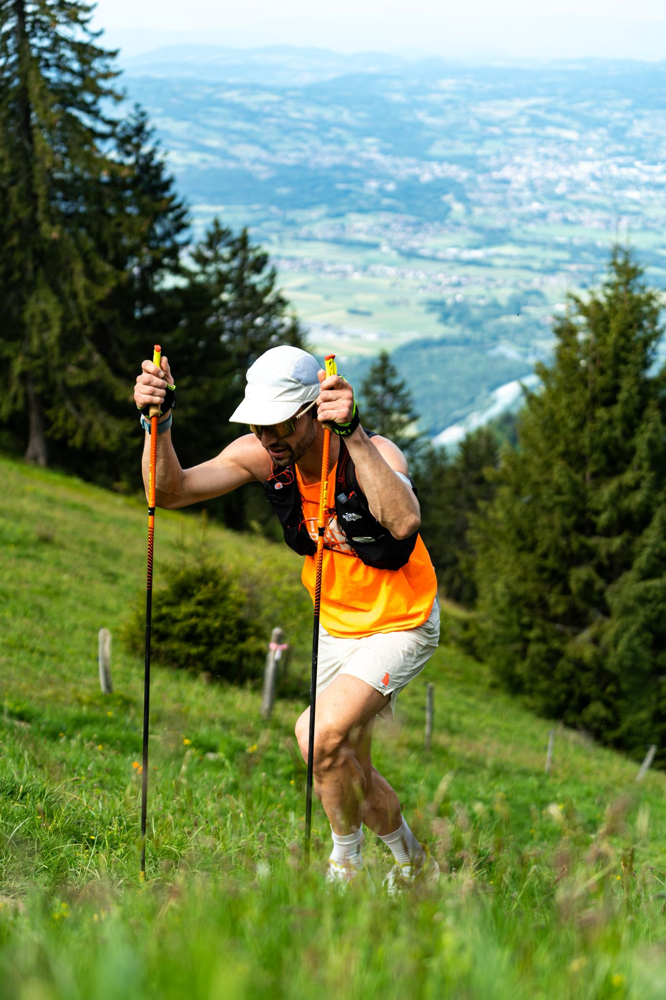

Coaching Trail & Ultra-Trail
Votre préparation millimétrée pour conquérir les dénivelés de Haute-Savoie et d'ailleurs.
Une approche scientifique de la montagne
Le trail n'est pas qu'une question de VMA. Il s'agit d'entraîner le corps à résister à la destruction musculaire induite par le dénivelé négatif (casse de fibres) et d'y associer un Test de Puissance Critique spécifique aux contraintes du terrain.
Fort de mon cursus universitaire (Licence STAPS Entraînement & Altitude à Font-Romeu) et de my experience personnelle (1er à la Romeufontaine, 7ème au Courchevel Xtrail), je vous propose un encadrement qui prend en compte toutes les contraintes de notre sport.
Les piliers du suivi Trail :
- ✓ Apprentissage technique : Maîtrise de la foulée en dénivelé, biomécanique et aisance dans les descentes techniques.
- ✓ Stratégie de course & Pacing : Régulation de l'allure via la VAM et la puissance pour lisser votre effort sur ultra-trail.
- ✓ Alimentation & Hydratation : Planification nutritionnelle sur-mesure pour éviter les défaillances métaboliques en ultra-endurance.
- ✓ Renforcement musculaire : Programmation spécifique de force, PPG et prévention des blessures musculaires et articulaires.
- ✓ Gestion de l'effort & Modélisation : Analyse de la charge d'entraînement et de la fatigue (VFC) pour progresser sans surentraînement.

Questions Fréquentes
Quelle est la différence entre la VMA et la Vitesse Critique pour un trail ?
Contrairement à la VMA qui surestime l'endurance, la Vitesse Critique (VC) détermine la véritable frontière métabolique avant l'accumulation de lactates. Sur des trails longs, calibrer ses intensités via la VC permet d'éviter l'épuisement prématuré de ses réserves.
Faut-il utiliser la fréquence cardiaque ou la Puissance en Ultra-Trail ?
La fréquence cardiaque subit une forte dérive en ultra (chaleur, fatigue, dénivelé). La Puissance (Critique) offre une donnée mécanique instantanée et fiable pour lisser son effort en montée sans attaquer ses réserves anaérobies.
Pour aller plus loin

Envie de vitesse sur le bitume ?
Je vous accompagne également dans votre préparation sur route pour vos objectifs chronométriques (10km, Semi, Marathon).